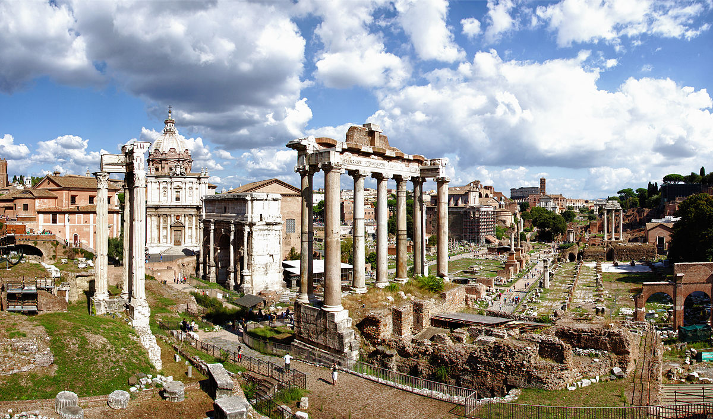

Roman Forum
The Roman Forum, known as Forum Romanum in Latin, was the center of day-to-day life in ancient Rome. It hosted important public meetings, legal proceedings, and social gatherings. The Forum was surrounded by several important buildings, including the Senate House and the Temple of Saturn.
Constructed in the 7th century BC, the Forum evolved over the centuries and became the heart of the Roman Empire. Today, it remains an iconic symbol of Rome's ancient grandeur, attracting visitors from around the world.